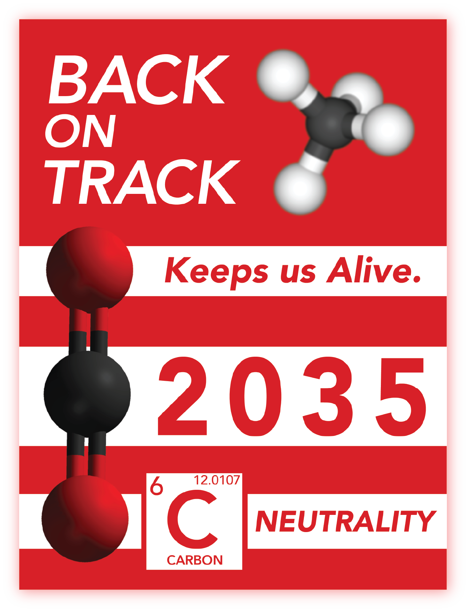
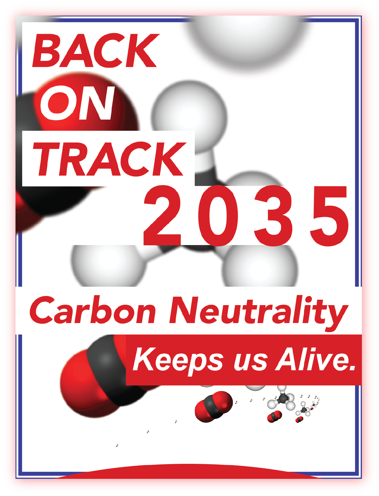
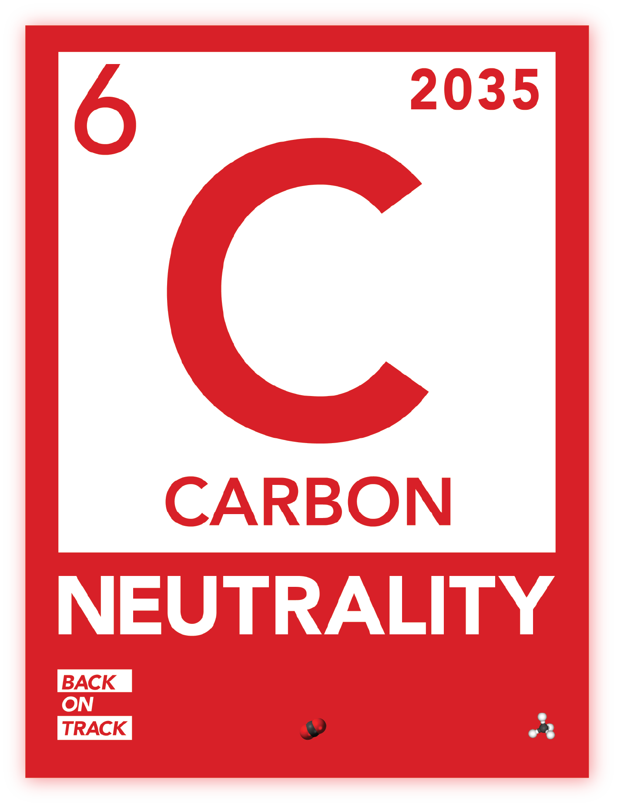
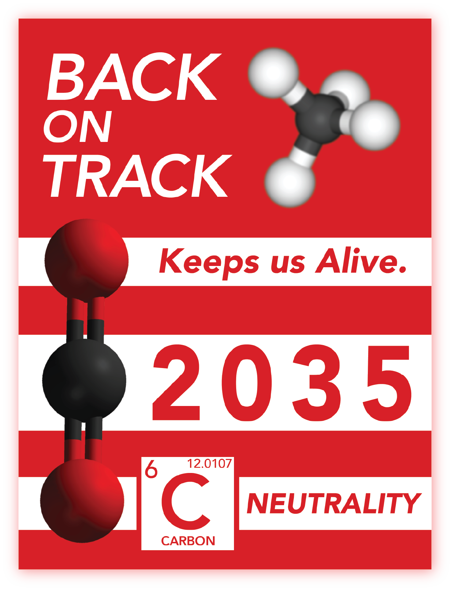
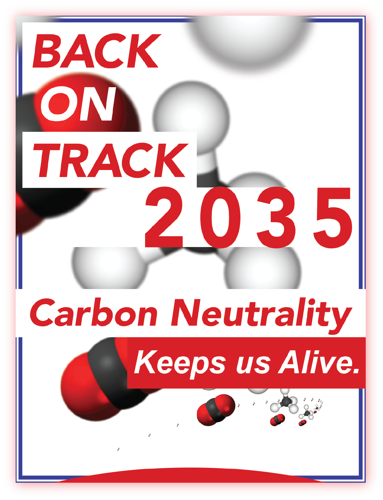
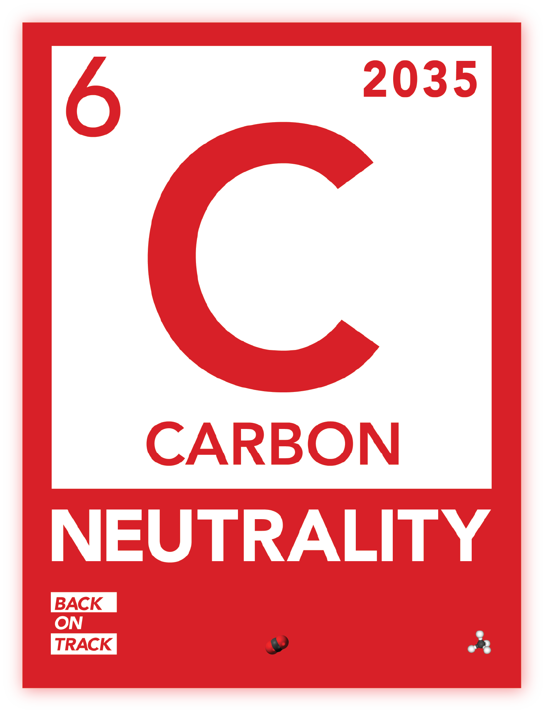

Information
Mostyn Griffith is a flexible designer. He likes to make work for but is not limited to: artists, non-profits, student associations, branding studios,various startups, as well as family and friends.
He is currently pursuing a BFA in Graphic Design at the Rhode Island School of Design in the graduating class of 2018. You can contact him at mostyn.griffith@gmail.com
You can find him on Instagram or even on that other website known as LinkedIn. Otherwise here is his resumé.
Evan Roth


Network Time Protocol is a landscape photography series by the artist Evan Roth that documents the often remote settings where the internet submarine cables meet the land. This book is an exposition of Roth's photos from a recent trip to Capetown, South Africa.
Epigenia


I and a close friend, Adrian Medina decided to collaborate on an idea that involved ecology, urban-planning, and world-building. We created a fictitious island-nation-state titled Epigenia as a means to communicate a green transition story. We decided to flesh out one of the pivotal characters in the narrative, Grete Li, a benevolent entrepreneur set out to overhaul the failing, unsustainable nation of Epigenia, turning it into a prosperous eco-state. In addition to this I attempted to create a visual timeline to accompany the interview as a means to detail pivotal events in time.
Street Light Politic


I chose the streetlamp as a subject for this book, examining its political implications. First I was interested in light's relationship to crime and whether or not it was a device used to discourage crimes. I then imagined possible futures of the streetlamp – whether or not it could be used as a tool for governments to effectively crack down on any and all crimes and possibly even dissent.
Editorial Design for the Screen
Uncertain Futures
This object was made for a collaboration between I and a student from Parsons. We created a digital zine that contextualizes the emergence of modern machine labour and the replacement of human workers throughout various industries.

Mars Landing
This is a speculative design object wherein a citizen's blinds are in the direct control of a government entity. A citizen can be subjected to any news and other pertinent pieces of information that the government may want to project.
The use case in this instance would be NASA's first successful manned mission to Mars – a news story that any government would want to directly broadcast to its citizens to a patriotic and emboldening affect.
Bad Precedent


This is a publication centered around the unconstitutional internment of Japanese citizens during World War II. A reminder of the xenophobic hysteria and racism that we as a nation can commit.
All photographs taken by Ansel Adams.
RAID


These figures and ephemera were made for the RISD Asian Intersections and Diaspora (RAID) club. They were created and handed out to attendees of the first general meeting.
Various Posters


Cornell Carbon Neutrality
 





This set of posters were designed for Cornell activist group, DivestNOW! The movement set out to protest against the administration's decision to abandon former Cornell President David Skorton's Carbon Neutrality plan for 2035.